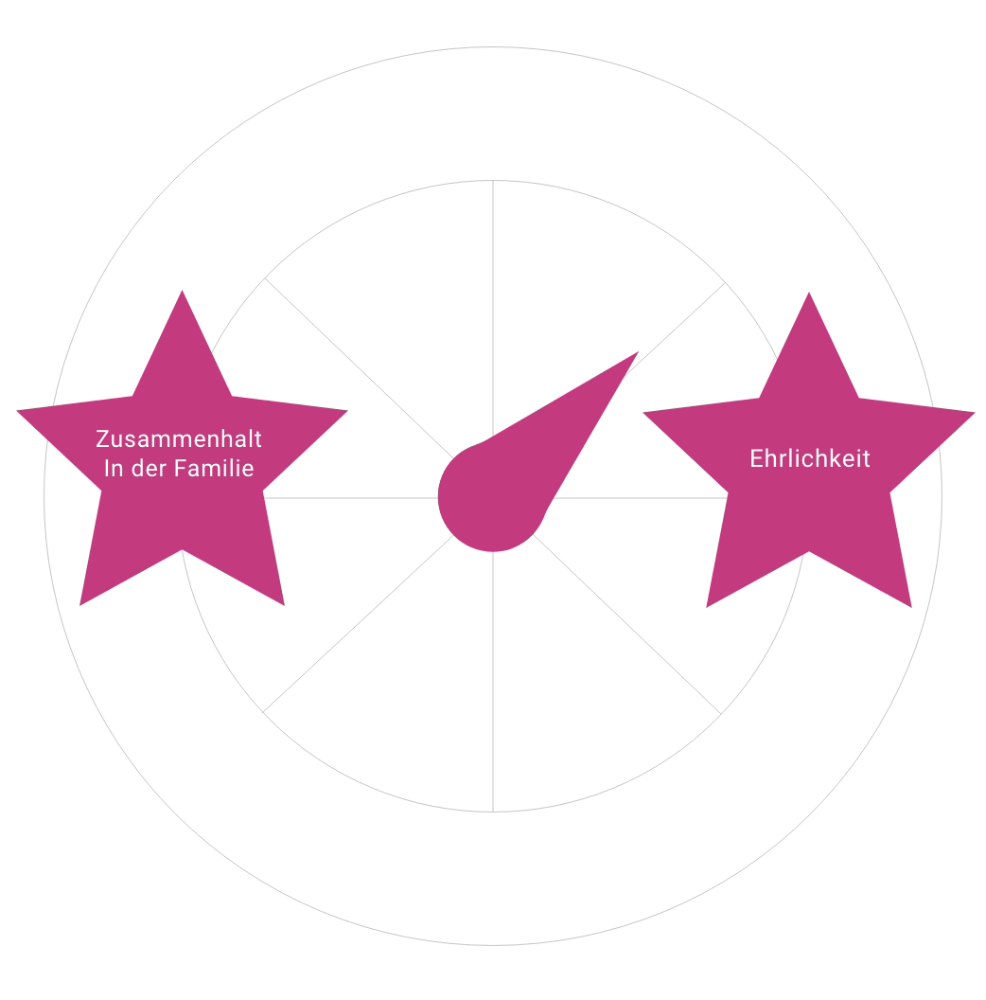
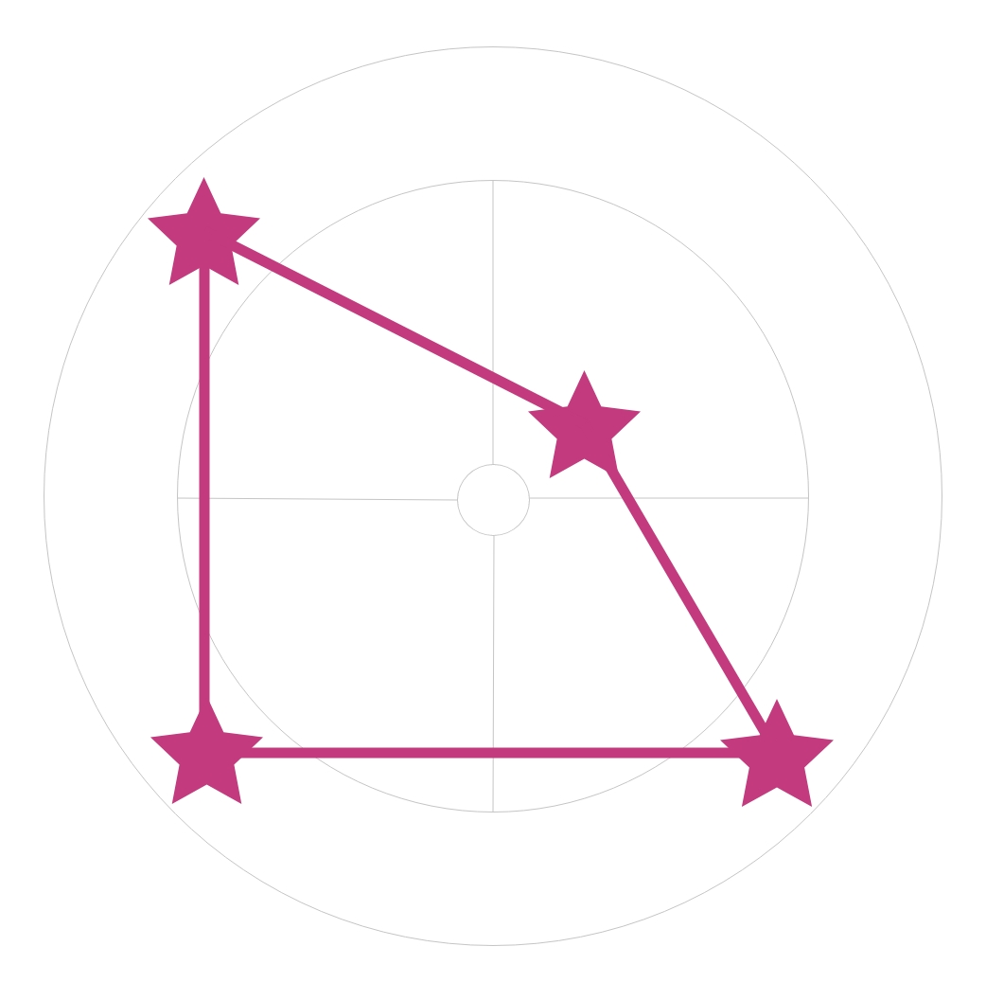
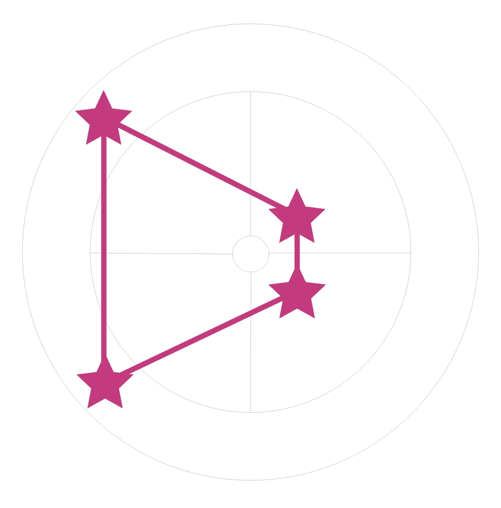
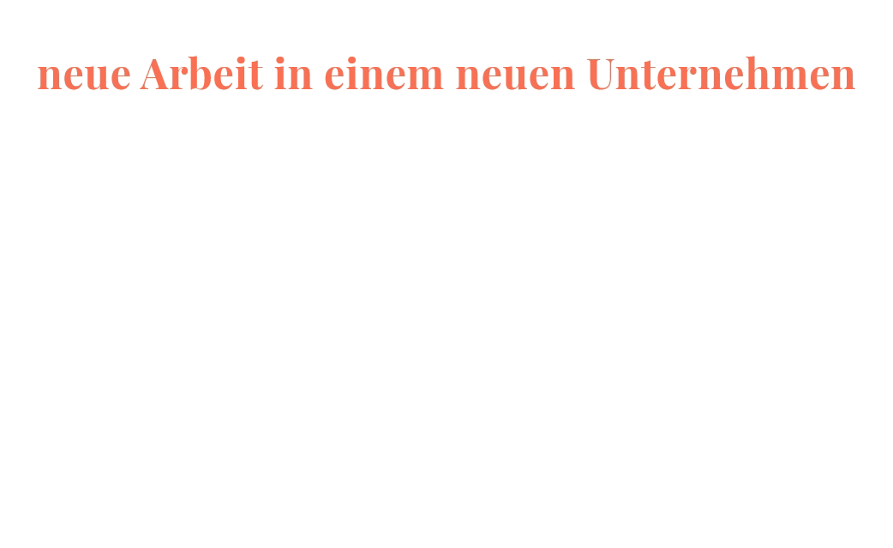

Was würdest du an Saras Stelle tun?
Lösungsfeedback: Deine Antwort ist richtig! Sie ist richtig, weil alle Antworten richtig sind. Egal, wie man sich entscheidet, es gibt bei dieser Geschichte keine gute und keine schlechte Lösung.
Ein Dilemma
Wenn Sara ihre Schwester verrät, ist sie eine schlechte und untreue Schwester. Wenn sie nichts sagt, dann ist sie unehrlich.
Das ist ein Dilemma. Hier stehen zwei Dinge in Konkurrenz:
Auf der einen Seite der Zusammenhalt der Familie und auf der anderen Seite die Ehrlichkeit.
Das sind zwei positive Werte. Jeder Mensch hat Werte.
Was bedeutet "wertvoll"?
Vielleicht kennst du das Wort „wertvoll“. Handys sind wertvoll, das neue Fahrrad, die teuren Schuhe. Meistens meinen wir damit, wieviel Geld etwas gekostet hat. Manchmal hat das Wort „wertvoll“ oder „Wert“ aber auch noch eine andere Bedeutung:
Dabei geht es nicht um Geld, sondern wie wichtig etwas für uns ist. Große Ideen wie Freundschaft und Liebe, Macht, Höflichkeit oder Glaube. Solche Ideen können für uns sehr wertvoll sein. Und deswegen spricht man von Werten.
Handeln nach Werten
Menschen handeln nach ihren Werten, die sie haben. Es kann passieren, dass man in einer Situation ist, in der man sich zwischen zwei seiner Werte entscheiden muss.
Auch in der Geschichte von Sara und ihrer Schwester, muss Sara sich für einen Wert entscheiden. Hierbei gibt es aber kein richtig oder falsch.

Die Bedeutung von Werten
Werte bestimmen also unsere Handlungen und Entscheidungen. Wie man sich entscheidet, hängt davon ab, welcher Wert einem wichtiger ist. In Saras Geschichte ist es entweder der Zusammenhalt der Familie oder Ehrlichkeit.
Jeden Tag, bei jeder Entscheidung, bei jeder Bewertung und Überlegung spielen Werte eine wichtige Rolle.
Werte bestimmen dein Handeln, beeinflussen deine Wahrnehmung und deine Einstellungen. Sie geben dir Orientierung im Leben.
Wertewolke
Persönliche Werte
Schau mal, auf der nächsten Folie habe ich einige Werte rausgesucht. Mir ist zum Beispiel Hilfsbereitschaft, Innovation und Humor wichtig. Andere finden diese Werte vielleicht gar nicht wichtig. So hat jede Person eine persönliche Rangfolge von Werten.
Wertevisualisierung
Der Wertekreis
Viele Werte, die auf der ganzen Welt wichtig sind, können in einem Kreis angeordnet werden. In dem Kreis liegen Werte, die sich ähnlich sind, nah beieinander, z.B. Tradition und Sicherheit. Werte, die sich eher widersprechen und nicht so gut zusammenpassen, liegen im Kreis gegenüber, z.B. Freiheit und Sicherheit.
In unserer Darstellung bilden die Werte einzelne Sterne, weswegen für jede Person eine individuelle Sternenkarte entsteht.
Deine persönlichen Werte
Kennst du deine persönlichen Werte? Nach welchen Werten handelst du jeden Tag? Hier siehst du einen Kreis, in dem die jeweiligen Sterne noch fehlen! Ziehe die Sterne auf die Position im Kreis, die dich am besten beschreibt. Wenn der Stern innen im Kreis liegt, ist dir dieser Wert gar nicht wichtig, positionierst du ihn außen im Kreis, ist er dir sehr wichtig!
Deine Werte
Ahhhh so sind also deine Werte verteilt, sehr interessant!
Unterschiedliche Werte
Werte, die einem selbst wertvoll erscheinen, können von einer anderen Person oder anderen Gruppen als weniger wertvoll oder sogar als fragwürdig erachtet werden. Wenn wir unsere eigenen Werte und die der anderen Menschen kennen, fördert das ein respektvolles und verständnisvolles Miteinander.
Verschiedene Werte-Sternkarten
Schau dir mal die Werte-Sternkarten von Natalia, Clara, Sara und Faiz an. Darin sieht man die unterschiedlichen persönlichen Werte, die sie haben. Aber auch Werte, die sie teilen.
Sara
Olena
Faiz
Natalia
Clara

Sara
Faiz

Veränderungen von Werten
Werte können in uns verankert sein und über einen Zeitraum stabil sein. Aber sie können sich auch verändern. Wenn sich äußere Bedingungen verändern, verändern sich meistens auch die eigenen Werte oder die Wichtigkeit von Werten. Das passiert durch neue Bekanntschaften, neue Orte und neue Erfahrungen, die wir machen. Ereignisse in unserem Leben können also dazu führen, dass sich unsere Werte ändern.
Das können alle möglichen Ereignisse sein:

Veränderung eigener Werte
Also ich bin ja auch nicht mehr der Blopp, der ich vor ein paar Jahren mal war. Vielleicht siehst du auch bei dir eine Veränderung in deinen Werten?! Möglicherweise haben sich deine Werte gewandelt. Vielleicht ist durch ein Erlebnis ein Wert weniger wichtig geworden, ein anderer Wert ist dafür wichtiger geworden. Vielleicht hältst du aber auch an einigen alten Werten fest -- das kann Sicherheit geben.
Geschafft!
Super! Du hast die Übung geschafft! Jetzt kennst du dich besser mit Werten aus und konntest deine persönlichen Werte herausfinden!